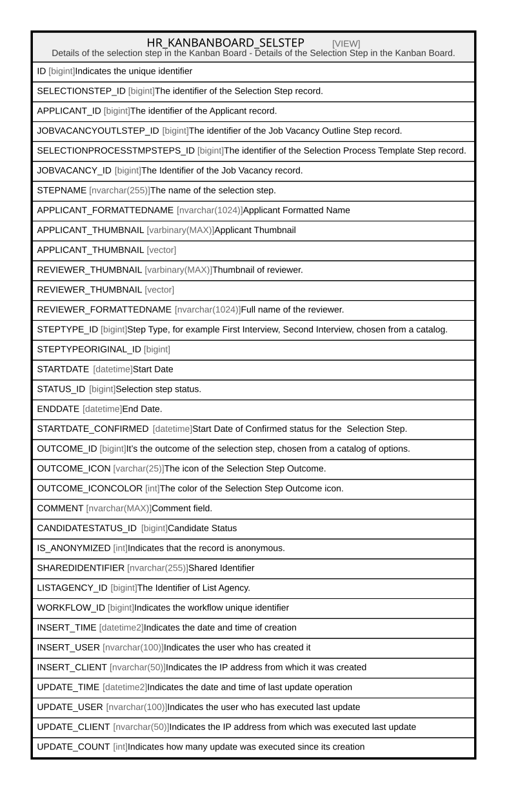

HR_KANBANBOARD_SELSTEP
Description
Details of the selection step in the Kanban Board - Details of the Selection Step in the Kanban Board.
Table Definition
-- Talentia Software - All right reserved
-- Type: VIEW Name: HR_KANBANBOARD_SELSTEP
-- Date: 09-04-2026 07:27:59 (UTC)
--
-- ChangeLogId: 00000000-0000-0000-0000-000000000000
-- ChangeSetId: 063d5336-4e20-4a5f-a0b1-6dc3fe44ef8e
-- Original file name: C:\repos\Talentia-Software\hcm-core/DB/ProductDB/EDM\Schema\Views\HR_KANBANBOARD_SELSTEP.xml
CREATE VIEW [HR_KANBANBOARD_SELSTEP]
( ID, SELECTIONSTEP_ID, APPLICANT_ID, JOBVACANCYOUTLSTEP_ID, SELECTIONPROCESSTMPSTEPS_ID, JOBVACANCY_ID, STEPNAME, APPLICANT_FORMATTEDNAME, APPLICANT_THUMBNAIL, REVIEWER_THUMBNAIL, REVIEWER_FORMATTEDNAME, STEPTYPE_ID, STEPTYPEORIGINAL_ID, STARTDATE, STATUS_ID, ENDDATE, STARTDATE_CONFIRMED, OUTCOME_ID, OUTCOME_ICON, OUTCOME_ICONCOLOR, COMMENT, CANDIDATESTATUS_ID, IS_ANONYMIZED, SHAREDIDENTIFIER, LISTAGENCY_ID, WORKFLOW_ID, INSERT_TIME, INSERT_USER, INSERT_CLIENT, UPDATE_TIME, UPDATE_USER, UPDATE_CLIENT, UPDATE_COUNT )
AS
( select ROW_NUMBER() OVER ( ORDER BY SELECTIONSTEP_ID ) as ID,
* from (select
HR_SELECTIONSTEP.ID as SELECTIONSTEP_ID,
HR_SELECTIONSTEP.APPLICANT_ID,
(CASE WHEN (HR_JOBVACANCY.SELECTIONPROCESSTEMPLATE_ID IS NOT NULL AND HR_SELECTIONSTEP.JOBVACANCYOUTLSTEP_ID IS NULL) THEN 2 ELSE HR_SELECTIONSTEP.JOBVACANCYOUTLSTEP_ID END) AS JOBVACANCYOUTLSTEP_ID,
HR_SELECTIONPROCESSTMPSTEPS.ID AS SELECTIONPROCESSTMPSTEPS_ID,
HR_APPLICANT.JOBVACANCY_ID AS JOBVACANCY_ID,
(CASE WHEN (HR_JOBVACANCY.SELECTIONPROCESSTEMPLATE_ID IS NOT NULL AND HR_SELECTIONSTEP.JOBVACANCYOUTLSTEP_ID IS NULL) THEN 'Other' ELSE HR_SELECTIONPROCESSTMPSTEPS.NAME END) AS STEPNAME,
CANDIDATE.FORMATTEDNAME AS APPLICANT_FORMATTEDNAME,
CANDIDATE.THUMBNAIL AS APPLICANT_THUMBNAIL,
HR_PERSON.THUMBNAIL AS REVIEWER_THUMBNAIL,
HR_PERSON.FORMATTEDNAME AS REVIEWER_FORMATTEDNAME,
(CASE WHEN (HR_JOBVACANCY.SELECTIONPROCESSTEMPLATE_ID IS NOT NULL AND HR_SELECTIONSTEP.JOBVACANCYOUTLSTEP_ID IS NULL) THEN 2 ELSE HR_SELECTIONSTEP.STEPTYPE_ID END) AS STEPTYPE_ID,
HR_SELECTIONSTEP.STEPTYPE_ID AS STEPTYPEORIGINAL_ID,
HR_SELECTIONSTEP.STARTDATE AS STARTDATE,
HR_SELECTIONSTEP.STEPSTATUS_ID AS STATUS_ID,
HR_SELECTIONSTEP.ENDDATE AS ENDDATE,
(CASE WHEN HR_SELECTIONSTEP.STEPSTATUS_ID = 1156020 THEN HR_SELECTIONSTEP.STARTDATE ELSE NULL END) AS STARTDATE_CONFIRMED,
HR_SELECTIONSTEP.OUTCOME_ID AS OUTCOME_ID,
(CASE WHEN HR_SELECTIONSTEP.OUTCOME_ID = 1156023 THEN 'fad fa-check-circle' WHEN HR_SELECTIONSTEP.OUTCOME_ID = 1156024 THEN 'fad fa-exclamation-circle' ELSE NULL END) AS OUTCOME_ICON,
(CASE WHEN HR_SELECTIONSTEP.OUTCOME_ID = 1156023 THEN 276 WHEN HR_SELECTIONSTEP.OUTCOME_ID = 1156024 THEN 154 ELSE NULL END) AS OUTCOME_ICONCOLOR,
HR_SELECTIONSTEP.NOTE AS COMMENT,
NULL AS CANDIDATESTATUS_ID,
CANDIDATE.IS_ANONYMIZED AS IS_ANONYMIZED,
HR_SELECTIONSTEP.SHAREDIDENTIFIER AS SHAREDIDENTIFIER,
HR_SELECTIONSTEP.LISTAGENCY_ID AS LISTAGENCY_ID,
HR_SELECTIONSTEP.WORKFLOW_ID AS WORKFLOWID,
HR_SELECTIONSTEP.INSERT_TIME AS INSERTTIME,
HR_SELECTIONSTEP.INSERT_USER AS INSERTUSER,
HR_SELECTIONSTEP.INSERT_CLIENT AS INSERTCLIENT,
HR_SELECTIONSTEP.UPDATE_TIME AS UPDATETIME,
HR_SELECTIONSTEP.UPDATE_USER AS UPDATEUSER,
HR_SELECTIONSTEP.UPDATE_CLIENT AS UPDATECLIENT,
HR_SELECTIONSTEP.UPDATE_COUNT AS UPDATECOUNT
from HR_SELECTIONSTEP
INNER JOIN HR_APPLICANT on HR_APPLICANT.ID = HR_SELECTIONSTEP.APPLICANT_ID
INNER JOIN HR_JOBVACANCY ON HR_APPLICANT.JOBVACANCY_ID = HR_JOBVACANCY.ID
LEFT OUTER JOIN HR_CANDIDATE_VIEW CANDIDATE ON HR_SELECTIONSTEP.CANDIDATE_ID = CANDIDATE.ID
LEFT OUTER JOIN HR_PERSON ON HR_SELECTIONSTEP.REVIEWER_ID = HR_PERSON.ID
LEFT OUTER JOIN HR_JOBVACANCYOUTLINESTEPS on HR_JOBVACANCYOUTLINESTEPS.ID = HR_SELECTIONSTEP.JOBVACANCYOUTLSTEP_ID
left outer join HR_SELECTIONPROCESSTMPSTEPS ON HR_SELECTIONPROCESSTMPSTEPS.ID = HR_JOBVACANCYOUTLINESTEPS.SELECTIONPROCESSTMPSTEP_ID
union all
SELECT
HR_SHORTLISTEDCND.ID AS SELECTIONSTEP_ID,
HR_APPLICANT.ID AS APPLICANT_ID,
1 AS JOBVACANCYOUTLSTEP_ID,
NULL AS SELECTIONPROCESSTMPSTEPS_ID,
HR_SHORTLISTEDCND.VACANCY_ID AS JOBVACANCY_ID,
'Job Offer' as STEPNAME,
CANDIDATE.FORMATTEDNAME AS APPLICANT_FORMATTEDNAME,
CANDIDATE.THUMBNAIL AS APPLICANT_THUMBNAIL,
NULL AS REVIEWER_THUMBNAIL,
NULL AS REVIEWER_FORMATTEDNAME,
1 as STEPTYPE_ID,
1 AS STEPTYPEORIGINAL_ID,
HR_SHORTLISTEDCND.HIREDATE AS STARTDATE,
NULL AS STATUS_ID,
NULL AS ENDDATE,
(CASE WHEN HR_SHORTLISTEDCND.CANDIDATESTATUS_ID <> 1109192 THEN HR_SHORTLISTEDCND.HIREDATE ELSE NULL END) AS STARTDATE_CONFIRMED,
HR_SHORTLISTEDCND.REJECTREASON_ID AS OUTCOME_ID,
(CASE WHEN HR_SHORTLISTEDCND.CANDIDATESTATUS_ID = 1109192 THEN 'fad fa-user-times' WHEN HR_SHORTLISTEDCND.CANDIDATESTATUS_ID = 1109193 THEN 'fad fa-user-clock' WHEN HR_SHORTLISTEDCND.CANDIDATESTATUS_ID = 1109194 THEN 'fad fa-user-check' ELSE NULL END) AS OUTCOME_ICON,
(CASE WHEN HR_SHORTLISTEDCND.CANDIDATESTATUS_ID = 1109192 THEN 154 WHEN HR_SHORTLISTEDCND.CANDIDATESTATUS_ID = 1109194 THEN 306 ELSE 9 END) AS OUTCOME_ICONCOLOR,
NULL AS COMMENT,
HR_SHORTLISTEDCND.CANDIDATESTATUS_ID AS CANDIDATESTATUS_ID,
CANDIDATE.IS_ANONYMIZED AS IS_ANONYMIZED,
HR_SHORTLISTEDCND.SHAREDIDENTIFIER AS SHAREDIDENTIFIER,
HR_SHORTLISTEDCND.LISTAGENCY_ID AS LISTAGENCY_ID,
HR_SHORTLISTEDCND.WORKFLOW_ID AS WORKFLOWID,
HR_SHORTLISTEDCND.INSERT_TIME AS INSERTTIME,
HR_SHORTLISTEDCND.INSERT_USER AS INSERTUSER,
HR_SHORTLISTEDCND.INSERT_CLIENT AS INSERTCLIENT,
HR_SHORTLISTEDCND.UPDATE_TIME AS UPDATETIME,
HR_SHORTLISTEDCND.UPDATE_USER AS UPDATEUSER,
HR_SHORTLISTEDCND.UPDATE_CLIENT AS UPDATECLIENT,
HR_SHORTLISTEDCND.UPDATE_COUNT AS UPDATECOUNT
FROM HR_APPLICANT
INNER JOIN HR_SHORTLISTEDCND ON HR_SHORTLISTEDCND.APPLICANT_ID = HR_APPLICANT.ID
LEFT OUTER JOIN HR_CANDIDATE_VIEW CANDIDATE ON CANDIDATE.ID = HR_SHORTLISTEDCND.CANDIDATE_ID ) HR_SELECTIONSTEP )
Columns
| Name | Type | Default | Nullable | Comment |
|---|---|---|---|---|
| ID | bigint | true | Indicates the unique identifier | |
| SELECTIONSTEP_ID | bigint | false | The identifier of the Selection Step record. | |
| APPLICANT_ID | bigint | true | The identifier of the Applicant record. | |
| JOBVACANCYOUTLSTEP_ID | bigint | true | The identifier of the Job Vacancy Outline Step record. | |
| SELECTIONPROCESSTMPSTEPS_ID | bigint | true | The identifier of the Selection Process Template Step record. | |
| JOBVACANCY_ID | bigint | true | The Identifier of the Job Vacancy record. | |
| STEPNAME | nvarchar(255) | true | The name of the selection step. | |
| APPLICANT_FORMATTEDNAME | nvarchar(1024) | true | Applicant Formatted Name | |
| APPLICANT_THUMBNAIL | varbinary(MAX) | true | Applicant Thumbnail | |
| APPLICANT_THUMBNAIL | vector | true | ||
| REVIEWER_THUMBNAIL | varbinary(MAX) | true | Thumbnail of reviewer. | |
| REVIEWER_THUMBNAIL | vector | true | ||
| REVIEWER_FORMATTEDNAME | nvarchar(1024) | true | Full name of the reviewer. | |
| STEPTYPE_ID | bigint | true | Step Type, for example First Interview, Second Interview, chosen from a catalog. | |
| STEPTYPEORIGINAL_ID | bigint | true | ||
| STARTDATE | datetime | true | Start Date | |
| STATUS_ID | bigint | true | Selection step status. | |
| ENDDATE | datetime | true | End Date. | |
| STARTDATE_CONFIRMED | datetime | true | Start Date of Confirmed status for the Selection Step. | |
| OUTCOME_ID | bigint | true | It’s the outcome of the selection step, chosen from a catalog of options. | |
| OUTCOME_ICON | varchar(25) | true | The icon of the Selection Step Outcome. | |
| OUTCOME_ICONCOLOR | int | true | The color of the Selection Step Outcome icon. | |
| COMMENT | nvarchar(MAX) | true | Comment field. | |
| CANDIDATESTATUS_ID | bigint | true | Candidate Status | |
| IS_ANONYMIZED | int | true | Indicates that the record is anonymous. | |
| SHAREDIDENTIFIER | nvarchar(255) | true | Shared Identifier | |
| LISTAGENCY_ID | bigint | true | The Identifier of List Agency. | |
| WORKFLOW_ID | bigint | true | Indicates the workflow unique identifier | |
| INSERT_TIME | datetime2 | false | Indicates the date and time of creation | |
| INSERT_USER | nvarchar(100) | false | Indicates the user who has created it | |
| INSERT_CLIENT | nvarchar(50) | false | Indicates the IP address from which it was created | |
| UPDATE_TIME | datetime2 | false | Indicates the date and time of last update operation | |
| UPDATE_USER | nvarchar(100) | false | Indicates the user who has executed last update | |
| UPDATE_CLIENT | nvarchar(50) | false | Indicates the IP address from which was executed last update | |
| UPDATE_COUNT | int | false | Indicates how many update was executed since its creation |
Referenced Tables
| Name | Columns | Comment | Type |
|---|---|---|---|
| HR_SELECTIONSTEP | 28 | Selection Step - Indicates step in the selection process, for a selected candidate. Includes the date of the appointment, who will do the interview and the outcome. |
BASIC TABLE |
| HR_APPLICANT | 27 | Applicant - It’s an application for a vacancy by a candidate, regardless if internal or external. |
BASIC TABLE |
| HR_JOBVACANCY | 59 | Job Vacancy - Includes the Job, the candidate ideal profile, the text of the advert, economical and contractual conditions offered, Job location etc. |
BASIC TABLE |
| HR_CANDIDATE_VIEW | 53 | VIEW | |
| HR_PERSON | 56 | Person - Contains information identifying the person. |
BASIC TABLE |
| HR_JOBVACANCYOUTLINESTEPS | 16 | Job Vacancy Outline Steps - In a Job Vacancy definition, the steps needed to select a candidate. |
BASIC TABLE |
| HR_SELECTIONPROCESSTMPSTEPS | 21 | Selection Process Template Steps - Selection Process Template Steps |
BASIC TABLE |
| HR_SHORTLISTEDCND | 117 | Shortlisted Candidates - Shortlisted candidates are those candidates, internal or external, to whom a Job offer for a specific Vacancy has been proposed. For each candidate, basic contractual and deployment terms and conditions are also specified. |
BASIC TABLE |
Relations

Generated by tbls